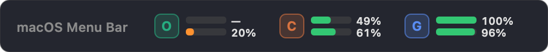
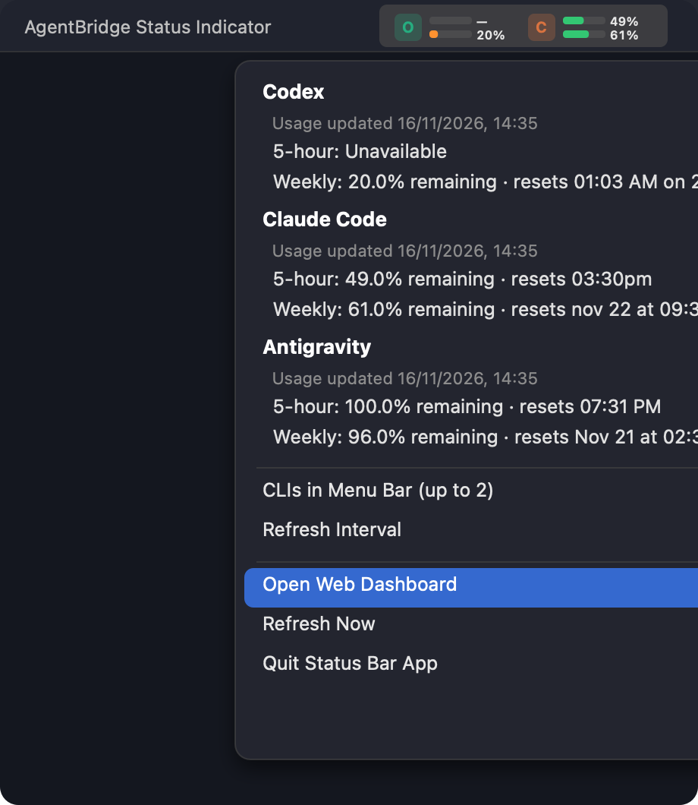
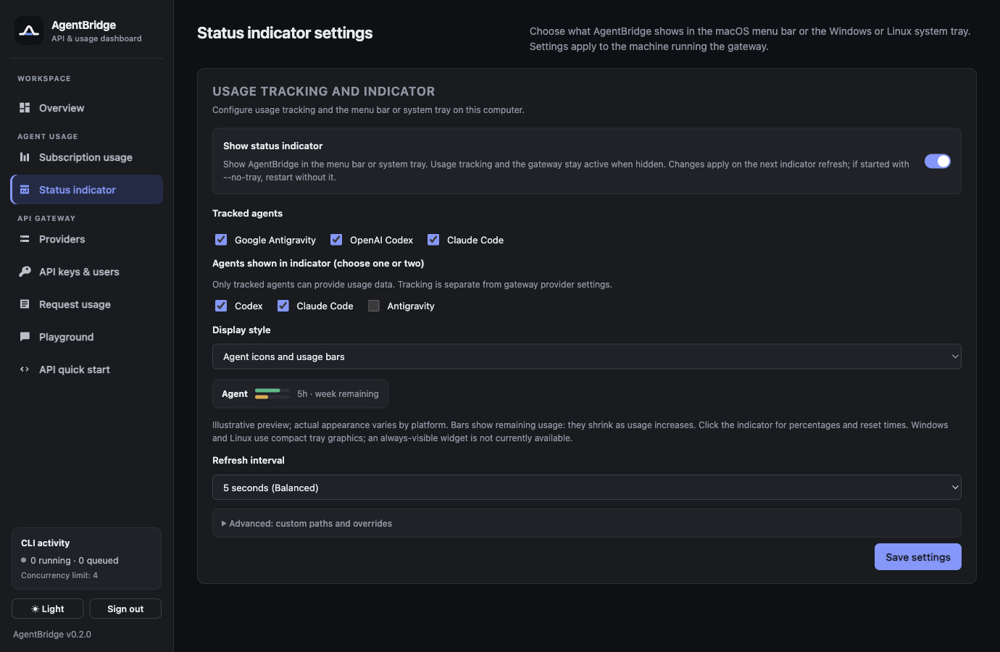
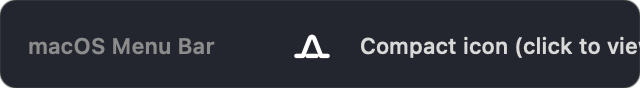

Status indicator
AgentBridge can show subscription usage in the macOS menu bar or the Windows/Linux system tray while the gateway runs. The dashboard's Status indicator page controls it on the machine running the gateway.

agentbridge start
agentbridge dashboard
Clicking the indicator opens a live dropdown menu showing current usage percentages, reset times, provider toggles, and shortcuts:

Settings
The indicator is on by default. On the Status indicator page in the dashboard you can:
- turn it on or off;
- choose one or two providers;
- select a display style;
- set the refresh interval.

Changes reach the indicator on its next poll. Hiding it does not stop the gateway or usage tracking. If you started with --no-tray, restart without it to use the indicator.
Settings are saved in backend/data/status_bar_config.json under the data directory.
Display styles
| Style | What it shows | Preview |
|---|---|---|
| Usage bars | Top bar = 5-hour window, bottom bar = weekly window. Both show remaining capacity, so they shrink as usage grows. Up to two providers. | |
| Compact icon | The AgentBridge mark. Click it to see usage and reset times. |  |
Click the indicator for details, provider selection, dashboard access and refresh. The Windows and Linux tray uses compact graphics with percentages in its menu; an always-visible desktop widget isn't available.
A missing value means unavailable, not zero. See Subscription usage.
Platform notes
A native helper starts with the gateway. The menu shows usage update time. Log: ~/.agentbridge/status-bar.log.
Needs a graphical X11 desktop with a system tray. Log: ~/.agentbridge/tray.log.
Uses the system tray. Log: ~/.agentbridge/tray.log.
If the helper fails to start the gateway keeps running. Run agentbridge start again to restart a missing helper without restarting the gateway.
Advanced: source checkouts on macOS
The packaged CLI starts the helper automatically. For a source checkout, ./menubar/build.sh builds it and agentbridge start manages it.
macOS privacy protections can stop login jobs from reading a checkout under Desktop, Documents or Downloads, even when a manual start works. Prefer a packaged install or a checkout elsewhere, and check ~/.agentbridge/autostart.log after login. Don't run the source service and the packaged CLI on the same port.